전자기사 (2012-03-04 기출문제)
1과목: 전기자기학
1. 최대 전계 Em=6[V/m]인 평면전자파가 수중을 전파할 때 자계의 최대치는 약 몇 [AT/m]인가? (단, 물의 비유전율 εs=80, 비투자율 μs=1이다.)
- 0.071[AT/m]
- 0.142[AT/m]
- 0.284[AT/m]
- 0.426[AT/m]
(정답률: 알수없음)

2. 자유공간에서 점 P(5, -2, 4)가 도체면상에 있으며, 이 점에서의 전계 E=6ax - 2ay +3az[V/m]이다. 점 P에서의 면전하밀도 ρs[C/m2 ]은?
- -2εo[C/m2]
- 3εo[C/m2]
- 6εo[C/m2]
- 7εo[C/m2]
(정답률: 알수없음)
3. 내압 1000[V] 정전용량 1[μF], 내압 750[V] 정전용량 2[μF], 내압 500[V] 정전용량 5[μF]인 콘덴서 3개를 직렬로 접속하고 인가 전압을 서서히 높이면 최초로 파괴되는 콘덴서는?
- 1[μF]
- 2[μF]
- 5[μF]
- 동시에 파괴된다.
(정답률: 알수없음)
4. 공극(air gap)이 있는 환상 솔레노이드에 권수는 1000회, 철심의 길이 I은 10[cm], 공극의 길이 ℓg 는 2[mm], 단면적은 3[cm2], 철심의 비투자율은 800, 전류는 10[A]라 했을 때, 이 솔레노이드의 자속은 약 몇 [Wb]인가? (단, 누설자속은 없다고 한다.)
- 3×10-2[Wb]
- 1.89×10-3[Wb]
- 1.77×10-3[Wb]
- 2.89×10-3[Wb]
(정답률: 알수없음)
5. 등자위면의 설명으로 잘못된 것은?
- 등자위면은 자력선과 직교한다.
- 자계 중에서 같은 자위의 점으로 이루어진 면이다.
- 자계 중에 있는 물체의 표면은 항상 등자위면이다.
- 서로 다른 등자위면은 교차하지 않는다.
(정답률: 60%)
6. 반지름 [m]의 원형판 전기 2중층의 중심축상 x[m]의 거리에 있는 점 P(+전하측)의 전위는?
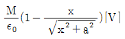
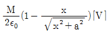
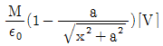
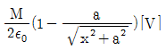
(정답률: 알수없음)
7. 변위전류에 의하여 전자파가 발생되었을 때, 전자파의 위상은?
- 변위전류보다 90° 늦다.
- 변위전류보다 90° 빠르다.
- 변위전류보다 30° 빠르다.
- 변위전류보다 30° 늦다.
(정답률: 80%)
8. 미분방정식의 형태로 나타낸 맥스웰의 전자계 기초 방정식에 해당되는 것은?
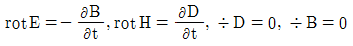
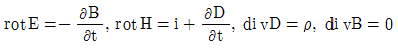
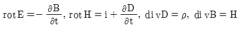
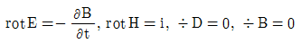
(정답률: 50%)
9. 그림과 같이 반지름 a[m]인 원형단면을 가지고 중심간격이 d[m]인 평행왕복도선의 단위길이당 자기인덕턴스[H/m]는? (단, 도체는 공기 중에 있고 d >> a로 한다.)
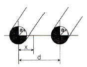
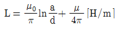
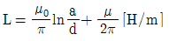
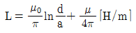
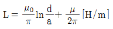
(정답률: 알수없음)
10. 동일한 금속 도선의 두 점간에 온도차를 주고 고온쪽에서 저온쪽으로 전류를 흘리면, 줄열 이외에 도선속에서 열이 발생하거나 흡수가 일어나는 현상을 지칭하는 것은?
- 지벡효과
- 톰슨효과
- 펠티에효과
- 볼타효과
(정답률: 알수없음)
11. 매질이 완전 유전체인 경우의 전자 파동 방정식을 표시하는 것은?
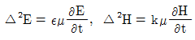
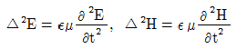
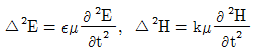
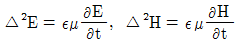
(정답률: 알수없음)
12. 환상 철심에 권수 1000회인 A코일과 권수 N회의 B코일이 감겨져 있다. A코일의 자기 인덕턴스가 100[mH]이고, 두 코일 사이의 상호 인덕턴스가 20[mH], 결합계수가 1일 때, B코일의 권수 N은?
- 100회
- 200회
- 300회
- 400회
(정답률: 80%)
13. 비유전율 εr=6, 비투자율 μr=1, 도전율 σ=0인 유전체 내에서의 전자파의 전파속도는 약 [m/s]인가?
- 1.22×108[m/s]
- 1.22×107[m/s]
- 1.22×106[m/s]
- 1.22×105[m/s]
(정답률: 알수없음)
14. 표면 부근에 집중해서 전류가 흐르는 현상을 표피효과라 하는데 표피효과에 대한 설명으로 잘못된 것은?
- 도체에 교류가 흐르면 표면에서부터 중심으로 들어갈수록 전류밀도가 작아진다.
- 표피효과는 고주파일수록 심하다.
- 표피효과는 도체의 전도도가 클수록 심하다.
- 표피효과는 도체의 투자율이 작을수록 심하다.
(정답률: 46%)
15. 자유공간 중에서 x=-2, y=4[m]를 통과하고 z축과 평행인 무한장 직선도체에 +z축 방향으로 직류전류 I[A]가 흐를 때 점(2, 4, 0)[m]에서의 자계 H[A/m]는?
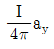
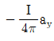
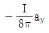
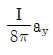
(정답률: 알수없음)
16. 비유전률 εs =2.2, 고유저항 ρ=1011[Ω∙m]인 유전체를 넣은 콘덴서의 용량이 200[μF]이었다. 여기에 500[kV] 전압을 가하였을 때, 누설전류는 약 몇 [A]인가?
- 4.2[A]
- 5.1[A]
- 51.3[A]
- 61.0[A]
(정답률: 알수없음)
17. 평등자계와 직각방향으로 일정한 속도로 발사된 전자의 원운동에 관한 설명 중 옳은 것은?
- 플레밍의 오른손법칙에 의한 로렌쯔의 힘과 원심력의 평형 원운동이다.
- 원의 반지름은 전자의 발사속도와 전계의 세기의 곱에 반비례한다.
- 전자의 원운동 주기는 전자의 발사 속도와 관계되지 않는다.
- 전자의 원운동 주파수는 전자의 질량에 비례한다.
(정답률: 알수없음)
18. 그림과 같은 회로에서 스위치를 최초 A에 연결하여 일정전류 I0[A]를 흘린 다음, 스위치를 급히 B로 전환할 때 저항 R[Ω]에는 1[s]간에 얼마만한 열량[cal]이 발생하는가?
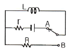
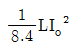
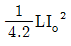
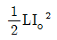
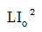
(정답률: 알수없음)
19. 30[V/m]의 전계내의 80[V] 되는 점에서 1[C]의 전하를 전계 방향으로 80[cm] 이동한 경우, 그 점의 전위[V]는?
- 9[V]
- 24[V]
- 30[V]
- 56[V]
(정답률: 60%)
20. 강자성체의 세 가지 특성에 포함되지 않는 것은?
- 와전류 특성
- 히스테리시스 특성
- 고투자율 특성
- 포화 특성
(정답률: 67%)
2과목: 회로이론
21. 저항 3[Ω], 유도 리액턴스 4[Ω]의 직렬회로에 60[Hz]의 정현파 전압 180[V]를 가했을 때 흐르는 전류의 실효치는?
- 26[A]
- 36[A]
- 45[A]
- 60[A]
(정답률: 알수없음)
22. 다음의 회로망 방정식에 대하여 S 평면에 존재하는 극은?
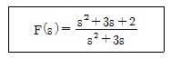
- 3, 0
- -3, 0
- 1, -3
- -1, -3
(정답률: 알수없음)
23. 그림과 같은 4단자 회로망에서 4단자 정수를 나타날 때 A 값은? (단, A는 개방 역방향 전압 이득임)
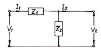
- Z1
- 1
- 1/Z2
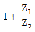
(정답률: 100%)
24. 그림과 같은 저항 회로에서 합성 저항이 Rab=12[kΩ]일 때 병렬 저항 Rx의 값은 몇 [Ω]인가?
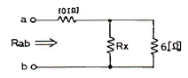
- 3
- 4
- 5
- 6
(정답률: 알수없음)
25. 라플라스 변환식
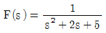
의 역 변환은?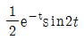
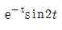
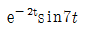
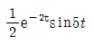
(정답률: 알수없음)
26. 다음 그림과 쌍대가 되는 회로는?
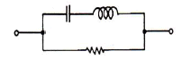
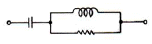
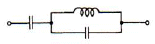
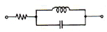
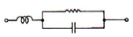
(정답률: 알수없음)
27. 페이저도가 다음 그림과 같이 주어졌을 때, 이 페이저도에 일치하는 등가 임피던스는?
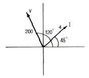
- 12.9+j 48.3
- -12+j 43.3
- 25+j 43.3
- 2.8+j 2.8
(정답률: 73%)
28. 다음 그림의 교류 회로에서 R에 전류가 흐르지 않기 위한 조건은?
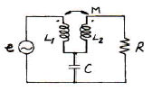
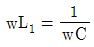
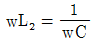
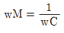
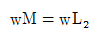
(정답률: 알수없음)
29.
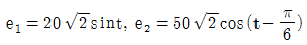
일 때, e1+e2의 실효치는 약 얼마인가?- √2900
- √3400
- √3900
- √4400
(정답률: 알수없음)
30. 무한장 전송 선로의 특성 임피던스 Z0는? (단, R, L, C, G 는 각각 단위 길이당의 저항, 인덕턴스, 컨덕턴스, 커패시턴스이다.)
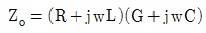
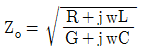
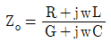
(정답률: 알수없음)
31. 1[neper]는 약 몇 [dB]인가?
- 3.146
- 8.686
- 7.076
- 6.326
(정답률: 알수없음)
32. RLC 직렬회로에 t=0인 순간, 직류전압을 인가한다면 2계 선형 미분 방정식은?
(정답률: 55%)
33. 공진회로에서 공진의 상태를 설명한 것으로 옳지 않은 것은?
- 전압과 전류가 동상이 될 때이다.
- 역률이 1이 되는 상태이다.
- 공진이 되었을 때 최대전력이 전달된다.
- 직렬공진회로에서는 전압이 최대가 된다.
(정답률: 34%)
34. 다음 회로망의 합성 저항은?
- 6[Ω]
- 12[Ω]
- 30[Ω]
- 50[Ω]
(정답률: 알수없음)
35. RC 직렬회로에서 직류전압을 인가할 때 전류값이 초기값의 e-1배가 되는 시간은 몇 [s]인가?
- 1/RC
- RC
- C/R
- R
(정답률: 알수없음)
36. 다음 그림과 같은 구형파의 라플라스 변환은?
(정답률: 알수없음)
37. 그림의 T형 4단자 회로에 대한 전송 파라미터 D는?
(정답률: 알수없음)
38. 원점을 지나지 않는 무한 직선의 궤적을 그리는 벡터의 역궤적은 어떻게 되는가?
- 원점을 지나는 직선이 된다.
- 원점을 지나는 원이 된다.
- 원점을 지나지 않는 직선이 된다.
- 원점을 지나지 않는 원이 된다.
(정답률: 알수없음)
39. 다음 회로에서 2[Ω] 저항에 흐르는 전류 I는?
- 3[A]
- 4[A]
- 5[A]
- 7[A]
(정답률: 59%)
40. 그림에 표시한 여파기는 다음 중 어디에 속하는가?
- 고역통과 여파기
- 대역통과 여파기
- 대역소거 여파기
- 저역통과 여파기
(정답률: 알수없음)
3과목: 전자회로
41. 다음 중 불 공식으로 옳지 않은 것은?
- X+XZ=(X+Y)(X+Z)
- X((X+Y)=X
(정답률: 알수없음)
42. 어떤 2단 증폭기에서 각 증폭기의 하한 임계 주파수가 500[Hz]이고 상한 임계 주파수가 80[kHz]일 때 2단 증폭기의 전체 대역폭 B는 약 몇 [kHz]인가?
- 30[kHz]
- 40[kHz]
- 50[kHz]
- 60[kHz]
(정답률: 알수없음)
43. 병렬 전류 궤환 증폭기의 궤환 신호 성분은?
- 전압
- 전류
- 전력
- 임피던스
(정답률: 50%)
44. 부궤환시 입력임피던스 변화에 대한 설명으로 옳지 않은 것은?
- 전압 직렬 궤환시 입력임피던스는 감소한다.
- 전류 직렬 궤환시 입력임피던스는 증가한다.
- 전압 병렬 궤환시 입력임피던스는 감소한다.
- 전류 병렬 궤환시 입력임피던스는 감소한다.
(정답률: 30%)
45. 두 개의 입력이 일치하면 출력이 High가 되는 회로는?
- AND
- NAND
- EX-OR
- EX-NOR
(정답률: 40%)
46. 전압이득이 60[dB], 왜율 10[%]인 저주파 증폭기의 왜율을 0.1[%]로 개선하기 위해서는 부궤환율(β)을 얼마로 하여야 하는가?
- 0.9
- 0.22
- 0.12
- 0.099
(정답률: 55%)
47. 맥동 전압주파수가 전원주파수의 3배가 되는 정류방식은?
- 단상 전파정류
- 단상 브리지정류
- 3상 반파정류
- 3상 전파정류
(정답률: 알수없음)
48. 그림과 같은 AM변조 회로는 어떠한 변조 방법인가?
- 이미터 변조
- 베이스 변조
- 컬렉터 변조
- 이미터-베이스 변조
(정답률: 알수없음)
49. 증폭기의 입력전압이 0.028[V]일 때, 출력전압이 28[V]이다. 이 증폭기에서 궤환율 β=0.012로 부궤환시켰을 때의 출력전압은 약 몇 [V]인가?
- 2.15[V]
- 3.23[V]
- 4.75[V]
- 5.34[V]
(정답률: 알수없음)
50. 다음 회로의 명칭으로 가장 적합한 것은?
- Schmitt 트리거 회로
- 톱니파발생회로
- Monostable 회로
- Astable 회로
(정답률: 90%)
51. 미분기의 출력과 입력은 어떤 관계인가?
- 출력은 입력의 변화율에 반비례한다.
- 출력은 입력의 변화율에 비례한다.
- 출력은 입력의 변화율에 무관하다.
- 출력은 입력의 변화율의 제곱에 비례한다.
(정답률: 알수없음)
52. 0 바이어스(zero bias)로 된 B급 푸시풀 증폭기에서 일어나기 쉬운 중력 파형의 일그러짐 현상을 무엇이라고 하는가?
- 주파수 일그러짐
- 진폭 일그러짐
- 교차 일그러짐
- 위상 일그러짐
(정답률: 알수없음)
53. RC 결합 증폭기에서 구형파 전압을 입력시켜 다음과 같은 출력이 나온다면 이 증폭기의 주파수 특성은?
- 고역특성이 주로 좋지 않다.
- 중역특성이 주로 좋지 않다.
- 저역특성이 주로 좋지 않다.
- 고역과 저역특성이 모두 좋지 않다.
(정답률: 알수없음)
54. 지연시간이 80[ns]인 플립플롭을 사용한 5단의 리플 카운터의 최고 동작주파수는 몇 [MHz]인가?
- 1.25
- 2.5
- 5
- 10
(정답률: 알수없음)
55. 다음 부궤환 연산증폭기 회로에서 궤환율 β는?
(정답률: 알수없음)
56. 다음 중 가장 적당한 고주파 전력 증폭기는?
- A급 증폭기
- B급 증폭기
- C급 증폭기
- AB급 증폭기
(정답률: 73%)
57. 그림과 같은 게이트의 기능은?
- PMOS NOT
- PMOS NAND
- CMOS NOT
- CMOS NAND
(정답률: 알수없음)
58. 그림의 연산증폭기에서 입력 Vi=-V이면 출력 Vo는? (단, 연산증폭기는 이상적인 것이라 한다.)
(정답률: 알수없음)
59. 다음과 같은 부궤환 증폭기에서 출력 임피던스는 궤환이 없을 때에 비하여 어떻게 변하는가?
- 감소한다.
- 증가한다.
- 1/hoe이 된다.
- 변함이 없다.
(정답률: 알수없음)
60. 이상적인 RC 결합증폭회로에서 주파수 대역폭을 4배로 증가하려면 전압증폭 이득은 약 몇 [dB] 감소시켜야 하는가?
- 3[dB]
- 6[dB]
- 12[dB]
- 24[dB]
(정답률: 알수없음)
4과목: 물리전자공학
61. 펀치스루(punch through) 현상에 대한 설명으로 가장 옳지 않은 것은?
- 베이스 중성 영역이 없는 상태이다.
- 펀치스루 전압은 베이스 영역 폭의 제곱에 비례한다.
- 컬렉터 역 바이어스의 증가에 의해 발생하는 현상이다.
- 펀치스루 전압은 베이스 내의 불순물 농도에 반비례한다.
(정답률: 알수없음)
62. FET가 초퍼(Chopper)로 적합한 가장 큰 이유는?
- 전력 소모가 적기 때문
- 대량 생산에 적합하기 때문
- 입력 임피던스가 매우 높기 때문
- 오프 셋 전압이 매우 작기 때문
(정답률: 알수없음)
63. 100[V] 전압으로 가속된 전자 속도는 25[V]의 전압으로 가속된 전자 속도의 몇 배인가?
- √2
- 2
- 5
- 5√2
(정답률: 알수없음)
64. 다음 중 FET를 단극성 소자라고 하는 이유는?
- 게이트가 대칭인 구조이기 때문이다.
- 전자만으로써 전류가 운반되기 때문이다.
- 소스와 드레인 단자가 같은 성질이기 때문이다.
- 다수 캐리어만으로써 전류가 운반되기 때문이다.
(정답률: 65%)
65. 온도가 상승하면 N형 반도체의 페르미(Fermi) 준위는?
- 전도대 쪽으로 근접 접근
- 가전자대 쪽으로 근접 접근
- 충만대 쪽으로 근접 접근
- 금지대 영역 중앙으로 근접 접근
(정답률: 알수없음)
66. 다음 중 2종의 금속을 접속하고 직류를 흘리면 그 접합부에 온도 차이가 생기는 효과는?
- Thomson 효과
- Hall 효과
- Seebeck 효과
- Peltier 효과
(정답률: 알수없음)
67. 페르미준위 Ef 에서 진성 반도체의 Fermi-Dirac 분포함수의 값은?
- 0
- 0.5
- 0.25
- 1
(정답률: 알수없음)
68. 2500[V]의 전압으로 가속된 전자의 속도는? (단, 전자질량은 9.11×10-31[kg]이고, 전하량은 1.6×10-19[C]이다.)
- 2.97×107[m/s]
- 2.97×108[m/s]
- 0.94×106[m/s]
- 0.94×107[m/s]
(정답률: 알수없음)
69. 다음 중 열음극을 갖는 것은?
- 계전기 방전관
- 네온관
- 정전압 방전관
- 수은 정류관
(정답률: 50%)
70. 진성반도체에서 온도에 따른 페르미 준위와의 관계로 가장 옳은 것은?
- 가전자대 쪽으로 접근한다.
- 전도대 쪽으로 접근한다.
- 금지대 중앙으로 접근한다.
- 온도와는 무관하다.
(정답률: 알수없음)
71. 접합형 트랜지스터의 구조에 대한 설명으로 옳은 것은?
- 이미터, 베이스, 컬렉터의 폭은 거의 비슷한 정도로 한다.
- 불순물 농도는 이미터를 가장 크게, 컬렉터를 가장 적게 한다.
- 베이스 폭은 비교적 좁게 하고, 불순물은 적게 넣는다.
- 베이스 폭은 비교적 좁게 하고, 불순물은 많이 넣는다.
(정답률: 40%)
72. Fermi-Dirac 분포함수 f(E)에 대한 설명으로 옳지 않은 것은? (단, Ef는 페르미준위이다.)
- T=0[K]일 때 E＞Ef이면 f(E)=0이다.
- T=0[K]일 때 E＜Ef이면 f(E)=1이다.
- 절대온도에 따라 전자가 채워질 확률은 일정하다.
- T=0[K]에서는 Ef보다 낮은 에너지준위는 전부 전자로 채워있으며, Ef 이상의 준위는 전부 비어있다.
(정답률: 알수없음)
73. 1[eV]를 가장 잘 설명한 것은?
- 1개의 전자가 1[J]의 에너지를 얻는데 필요한 에너지이다.
- 1개의 전자가 1[m]의 간격을 통과할 때 필요한 전압이다.
- 1개의 전자가 1[V]의 전위차를 통과할 때 필요한 운동 에너지이다.
- 1개의 전자가 1[m/sec]의 속도를 얻는데 필요한 에너지이다.
(정답률: 알수없음)
74. 다음 중 에필택셜(epitaxial) 성장이란?
- 다결정의 Ge 성장
- 다결정의 Si 성장
- 기판에 매우 얇은 단결정의 성장
- 기판에 매우 얇은 다결정의 성장
(정답률: 36%)
75. 낮은 전압에서는 큰 저항을 나타내며, 높은 전압에서는 작은 저항값을 갖는 소자는?
- 바랙터(Varactor)
- 바리스터(Varistor)
- 세미스터(semistor)
- 서미스터(thermistor)
(정답률: 알수없음)
76. pn접합 다이오드의 확산 용량에 관한 설명으로 옳은 것은?
- 공간 전하에 의한 용량이다.
- 다수캐리어의 확산작용에 의한 용량이다.
- 역바이어스에 의한 소수캐리어의 확산작용에 의한 용량이다.
- 순바이어스에 의하여 주입된 소수캐리어의 확산작용에 의한 용량이다.
(정답률: 알수없음)
77. 홀(Hall) 계수에 의해서 구할 수 있는 사항을 가장 잘 표현한 것은?
- 캐리어의 종류만을 구할 수 있다.
- 캐리어 농도와 도전율을 알 수 있다.
- 캐리어 종류와 도전율을 구할 수 있다.
- 캐리어의 종류, 농도는 물론 도전율을 알 경우 이동도도 구할 수 있다.
(정답률: 알수없음)
78. 입자와 파동의 성질을 동시에 갖는 미립자에서 입자의 운동량(P)과 평균 파장(λ) 사이의 관계식이 올바르게 연결된 것은? (단, h는 프랑크 상수)
(정답률: 알수없음)
79. 베이스 접지시 전류증폭률이 0.98일 때, 이미터 접지시 전류증폭률은?
- 20
- 40
- 49
- 98
(정답률: 75%)
80. 반도체에서 아이슈타인(Einstein)의 관계식은 확산계수와 무엇과의 관계를 나타내는 것인가?
- 이동도
- 유효 질량
- 캐리어 농도
- 내부 전압
(정답률: 알수없음)
5과목: 전자계산기일반
81. (42)10를 8비트 2진수로 나타낸 경우 1비트 산술적 우측 시프트 하였을 때의 값을 10진수로 나타내면?
- 20
- 21
- 84
- 85
(정답률: 알수없음)
82. 다음 중 입력장치를 모두 나타낸 것은?
- 1, 2, 3, 4, 5, 6
- 1, 2, 3, 4, 5
- 1, 2, 3, 4
- 1, 2, 3
(정답률: 알수없음)
83. 다음 중 값이 다른 것은?
- (10101010)2
- (AA)16
- (252)8
- (171)10
(정답률: 80%)
84. 중앙처리장치에 의한 입출력 방식이 아닌 것으로만 묶인 것은?
- 프로그램에 의한 입출력, 인터럽트 처리에 의한 입출력
- DMA에 의한 입출력, 채널 제어기에 의한 입출력
- 프로그램에 의한 입출력, 채널 제어기에 의한 입출력
- DMA에 의한 입출력, 인터럽트 처리에 의한 입출력
(정답률: 알수없음)
85. 다음 10진수 -426을 팩 십진수(pack decimal)로 나타낸 것 중 옳은 것은? (단, 맨 오른쪽 4비트가 부호 비트이다.)
- 0100 0010 0110 1111
- 0100 0010 0110 1101
- 0100 0010 0110 0001
- 0100 0010 0110 1100
(정답률: 알수없음)
86. C 언어의 특징을 잘못 설명한 것은?
- C언어 자체에는 입출력 기능을 제공하는 함수가 있다.
- C는 포인터의 주소를 계산할 수 있다.
- 연산자가 풍부하지 못하다.
- 데이터에는 반드시 형(type) 선언을 해야 한다.
(정답률: 73%)
87. 한 명령어의 수행이 끝나기 전에 다른 명령어의 수행을 시작하는 연산 방법을 무엇이라 하는가?
- Vector processor 기법
- neural network computer 기법
- Pipeline 기법
- Data flow computer 기법
(정답률: 47%)
88. 필요 없는 비트나 문자를 삭제하기 위해 가장 필요한 연산은?
- AND
- OR
- Complement
- MOVE
(정답률: 알수없음)
89. 디코더와 OR 게이트를 이용하여 전가산기를 구현하고자 한다. 다음 중 필요한 디코더의 크기는?
- 2× 4 디코더
- 3× 8 디코더
- 2× 16 디코더
- 5× 32 디코더
(정답률: 알수없음)
90. 디스크에 헤드가 가까울수록 불순물이나 결함에 의한 오류 발생의 위험이 더 크다. 이러한 문제점을 해결한 것은?
- 윈체스터 디스크
- 이동 디스크
- 콤팩트 디스크
- 플로피 디스크
(정답률: 알수없음)
91. 홀수 패리티 발생기에 대한 식으로 옳은 것은? (단, 입력은 x, y, z 이다.)
- (x⊙ y )⊙ z
- (x⊕ y )⊕ z
- (x⊕ y )⊙ z
- (x + y )ㆍz
(정답률: 알수없음)
92. 마이크로 프로그래밍에 관한 설명으로 옳지 않은 것은?
- 구조화된 제어 구조를 제공한다.
- 한 컴퓨터에서 다른 컴퓨터의 에뮬레이팅(emulating)이 가능하다.
- 시스템의 설계비용을 줄일 수 있다.
- 명령 세트를 변경할 수 없으므로 설계 사이클의 마지막으로 연기가 가능하다.
(정답률: 알수없음)
93. RISC(Reduced Instruction Set Computer) 시스템과 관련이 없는 것은?
- 하나의 명령어가 한 가지 이상의 명령어를 갖고 있다.
- 대부분의 명령어가 하나의 머신 사이클 내에 수행된다.
- 고정된 길이의 명령어를 제공한다.
- 제어 방식은 하드와이어(hardwired)적이다.
(정답률: 알수없음)
94. 다음 명령은 명령 형식 중 어디에 속하는가?
- 3주소 명령
- 2주소 명령
- 1주소 명령
- 0주소 명령
(정답률: 알수없음)
95. 16비트 컴퓨터 시스템에서 다음과 같은 두 가지의 인스트럭션 형식을 사용한다면 최대 연산자의 수는 얼마인가?
- 36
- 72
- 86
- 512
(정답률: 알수없음)
96. 한번 메모리를 액세스(access)하면 그것이 목적 데이터의 번지이기 때문에 2회 이상의 메모리 액세스(access)가 필요한 주소지정방식은?
- 간접 주소지정방식
- 직접 주소지정방식
- 상대 주소지정방식
- 인덱스 주소지정방식
(정답률: 알수없음)
97. java 언어에서 지역 변수나 멤버 변수를 변경할 수 없음을 나타내는 상수로 지정하는 제한자(한정자)는?
- public
- private
- protected
- final
(정답률: 알수없음)
98. 어셈블리 언어(Assembly Language)로 된 프로그램을 기계어(Machine Language)로 변환하는 것은?
- Compiler
- Translator
- Assembler
- Language Decoder
(정답률: 알수없음)
99. 다중처리(multi-processor) 시스템에 대한 설명 중 틀린 것은?
- 주기억장치를 여러 개의 CPU가 공유하여 동시에 사용할 수 있다.
- 여러 개의 CPU 중에 한쪽의 CPU가 고장이 날 경우 다른 쪽의 CPU를 이용하여 업무처리를 계속할 수 있다.
- CPU를 두 개 이상 두고 동시에 여러 프로그램을 수행할 수 있다.
- 두 개 이상의 CPU가 각자의 업무를 분담하여 처리할 수 없다.
(정답률: 알수없음)
100. 일반적인 명령어 형식을 나타낸 것으로 옳은 것은?
- 연산자(OP 코드)와 데이터
- 연산자(OP 코드)와 오퍼랜드(Operand)
- 오퍼랜드(Operand)와 데이터
- 데이터와 주소부
(정답률: 60%)
전기장의 최대치 Em=6[V/m]이 주어졌으므로, 이를 이용하여 자기장의 최대치 Hm를 계산할 수 있다.
먼저, 물의 파동속도 c0는 다음과 같이 계산된다.
c0 = 1/√(εsμs) = 1/√(80×1) = 0.125[m/ns]
여기서 ns는 나노초를 의미한다.
다음으로, 자기장의 최대치 Hm는 다음과 같이 계산된다.
Hm = Em/c0 = 6[V/m]/0.125[m/ns] = 48[ns/A]
따라서, 정답은 "0.142[AT/m]"이다. (단위 변환을 하면 1[ns/A] = 0.001[μT], 48[ns/A] = 0.048[μT]이므로, 0.142[AT/m] = 0.142[μT/0.001[m]] = 0.142[μT/m])